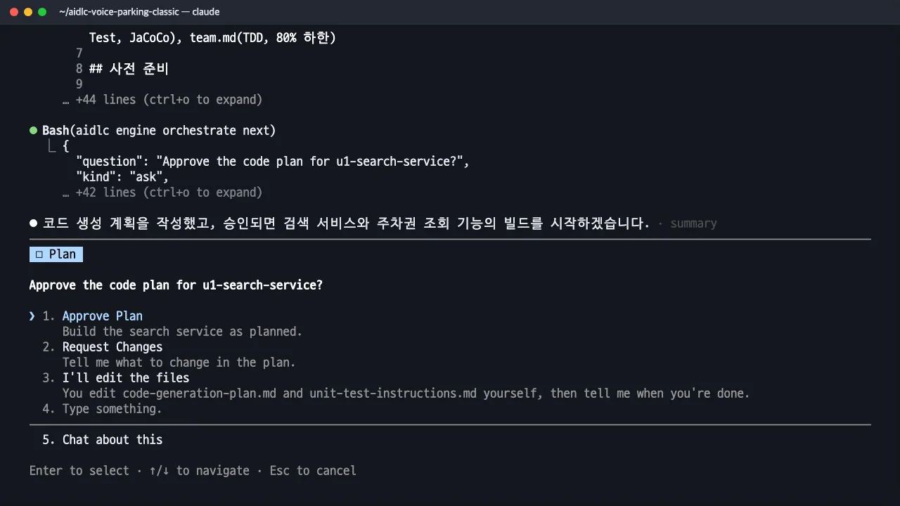
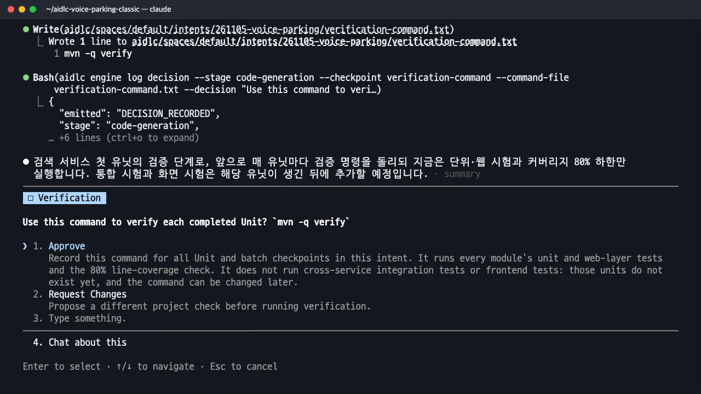

볼트 계획을 승인하면 구현(Construction)이 유닛 단위로 시작됩니다. 누가 만들지, 어떻게 진행할지(자동 진행과 실패 시 되돌아가는 루프)를 고르고, 첫 유닛 u1의 기능 설계 → NFR → TDD 코드 계획 → 코드 → 검증 명령까지 봅니다.
무엇을 · 왜#
레벨 1은 코드 생성 한 번에 전체를 만들었습니다. 레벨 2는 유닛 의존 DAG 순서(u1 → u2 → u3 → u4 → u5)대로 각 유닛에서 같은 절차를 반복합니다.
| 순서 | 스테이지 | 산출물 | 사람이 하는 일 |
|---|---|---|---|
| 1 | 3.1 기능 설계 | entities.md, rules.md, functional-spec.md |
(따로 멈추지 않음) |
| 2 | 3.2 NFR 요구사항 | 성능·보안·신뢰성·확장성·관측 요구사항, tech-stack-decisions.md |
(따로 멈추지 않음) |
| 3 | 3.3 NFR 설계 · 3.4 인프라 설계 | 설계 문서 | (따로 멈추지 않음) |
| 4 | 3.5 코드 생성 | 코드 계획 → 시험과 코드, traceability.json, code-summary.md |
코드 계획 승인 |
| 5 | 유닛 체크포인트 | 검증 명령 실행 기록 | 첫 유닛에서 검증 명령 승인, 이후 자동 또는 승인 |
classic에서는 유닛의 설계 스테이지마다 멈추지 않으며, 코드 계획을 승인할 때 설계도 함께 검토합니다. 모든 유닛이 끝나면 3.6 빌드와 테스트가 전체를 대상으로 한 번 실행됩니다.
따라 하기#
- 누가 만드나 (Who builds). 유닛이 둘 이상이면 처음에 한 번 묻습니다. Just me는 이 세션에서 유닛을 차례로 만들고, Several teams는 팀마다 유닛 하나를 맡아 각자의 사본(볼트 워크트리
bolt-<id>_<유닛>)에서 만들고 단계마다(또는 유닛 끝에 한 번) 승인합니다. 여기서는 Just me를 골랐습니다. - 진행 방식 (Autonomy). Continue automatically를 골랐습니다. 일반 체크포인트는 자동으로 넘어가고, 코드 계획 승인·검증 명령 선택·실패 처리는 여전히 사람이 맡습니다. 이 선택은 빌드와 테스트 실패 시의 자동 되돌아가기(최대 3번)도 활성화합니다. | 실패 처리 사다리 | 내용 | |---|---| | 1. 단계 안에서 고치기 | 시험 설정·빌드 스크립트·환경, 최대 2번 | | 2. 원인 분류와 영향 추정 | 생성된 코드·시험, 또는 코드 생성 때 고른 방식(라이브러리·버전·알고리즘)이 원인인지 파악하고 비용·위험을 추정 | | 3. 자동 되돌아가기 | 자동 진행일 때만, 원인 유닛의 코드 생성을 다시 열고 그 뒤를 다시 실행, 최대 3번 | | 4. 사람에게 묻기 | 그 밖의 경우 멈추고 후보와 영향을 보여 줌 | 랄프 루프(시험이 통과할 때까지 같은 지시로 반복 실행)와 달리 반복 횟수와 중단 조건이 정해져 있고, 품질 목표를 낮춰 통과시키는 것은 수정으로 인정하지 않습니다.
- u1의 설계. u1 search 서비스의 기능 설계와 NFR 문서가 차례로 생깁니다. 기능 명세에는 "강남역 근처 2시간"의 점수 계산 예시가 시험 기준값으로 들어가고(1위 gangnam-public-1, 종합 62점), 성능 요구사항에는 측정 방법이 붙습니다(추천 요청 100회 반복 최댓값 2초 이하).
- 코드 계획 승인 (Plan Approval). 팀 규칙의 TDD가 그대로 반영되었습니다. 계층마다 실패하는 시험을 먼저 쓰고(Red), 통과시키고(Green), 정리(Refactor)하는 순서로 계획했습니다.
계획 아래의 스토리 추적 표가 인수 조건과 계획 단계를 연결합니다(예:
- [ ] Step 9: 비즈니스 로직 - Red. 시험을 먼저 쓴다: QueryParser(장소·시간 추출, 장소 없음, 시간 없음, 범위 밖 시간), 점수 계산(AC2.2.1의 92·72·0 입력 예시, 계산 예시 표의 62·60·50·40과 순위, …) - [ ] Step 10: 비즈니스 로직 - Green. QueryParser, RecommendationService, ReasonFormatter, PassLookupService를 구현한다. - [ ] Step 12: API 계층 - Red. MockMvc 시험을 먼저 쓴다: C1 정상 200, 장소 없음 422, 시간 없음 422, …US2.2 AC2.2.1~AC2.2.6→ Step 9, 10, 12, 13, 15).
u1 코드 계획 승인 질문 - 구현. 개발 에이전트가 계획대로 시험과 코드를 만들고
mvn -q -pl services/u1-search-service test·verify로 시험과 JaCoCo 커버리지를 확인합니다. 완료되면 설계 검토 에이전트가 다시 검토합니다. acceptEdits 모드이므로 명령마다 실행 권한을 요청합니다. - 검증 명령 승인 (Construction Verification Command). 첫 유닛이 끝나면 각 유닛에서 실행할 검증 명령을 사람이 승인합니다. 이번에는
mvn -q verify(모든 모듈의 단위·웹 시험과 커버리지 80% 검사)였고, 이 명령은 이후 모든 유닛 체크포인트에서 동일하게 사용됩니다. 사람이 승인하지 않은 명령으로는 유닛을 검증할 수 없습니다.
검증 명령 승인 - u1 결과. 검증은 종료 코드 0으로 통과했고(
CHECKPOINT_VERIFICATION_RECORDED), 자동 진행이라 체크포인트가 자동으로 승인되었습니다. | 항목 | 결과 | |---|---| | 시험 | 65개 통과, 실패 0 | | 라인 커버리지 | 95.8% (313줄 중 300줄, 하한 80%) | | 파일 | Java 41개 (시험 12개) | | 추적 | ID 44개(AC·NFR·BR) 모두 OK |
이번 녹화가 멈춘 곳#
Claude Code 주간 사용량 한도에 가까워져 u1을 마친 직후(u2 기능 설계를 시작하기 직전) 멈췄습니다. u1을 완료하는 데 주간 사용량의 약 3%가 들었습니다. 계속하면 같은 순서로 이어집니다.
- u2 reservation(예약 상태, 180초 취소, SSE) → u3 payment(결제, 내장 모의 PG, 서명 웹훅) → u4 web-ui(Vue 화면, Vite 프록시, 화면까지 1초) → u5 local-run(실행 스크립트)
- 유닛마다 기능 설계 → NFR → 코드 계획 승인 → TDD 구현 →
mvn -q verify체크포인트 - 마지막에 3.6 빌드와 테스트가 전체를 한 번 검증하고, 실패하면 위 절차대로 처리합니다.
멈춘 작업은 같은 폴더에서 claude를 다시 켜고 /aidlc를 입력하면 u2부터 이어집니다(상태 파일에 진행 지점이 기록되어 있습니다).
확인 문제#
"Continue automatically"를 고르면 사람은 아무것도 하지 않나요?
아닙니다. 일반 체크포인트만 자동입니다. 유닛마다 코드 계획 승인, 검증 명령 선택, 실패 처리는 여전히 사람이 맡습니다.
u1의 시험이 스펙을 따랐는지 어디서 확인하나요?
construction/u1-search-service/code-generation/의 코드 계획(스토리 추적 표)과 traceability.json(ID마다 시험 파일)을 봅니다. 볼트 계획 B1의 완료 기준에 적힌 AC 번호와 맞춰 보면 됩니다.